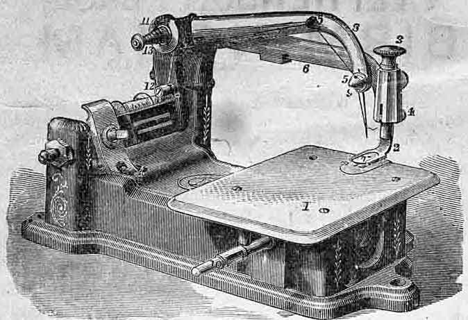
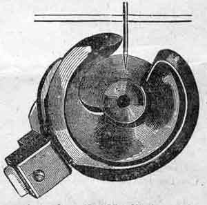
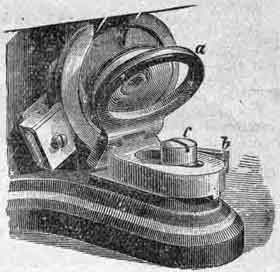

FOR USING
These directions should be carefully studied and followed by persons learning to operate.
Allow no person interested in the sale of other Sewing Machines to handle the Machine in any manner whatever. Allow the Machine to be adjusted or repaired by no one but an authorized Agent, or at our Office.
Genuine WHEELER & WILSON needles are marked W. & W. M'f'g Co., all others are imitations. We cannot warrant machines to work when counterfeit needles are used.
Needles are numbered on the flat side.
Buy good cotton and silk. You cannot make a smooth, even stitch with poor, rough thread.
SIZES OF NEEDLES AND THREAD TO BE USED
| SIZES OF NEEDLE | FOR: | SIZES OF COTTON |
| 0 | Undressed Nainsook and Jaconet Tucking Fine Linen Bosoms |
90 to150 80 to 100 |
| 1 | Swiss Muslin, Collars, Lawns, Handkerchiefs and Fine Muslins | 80 to 90 |
| 2 | Muslin, Calico, Delaine &c Shirting, Sheeting and Under Clothing |
60 to 80 60 to 70 |
| 2 1/2 | Quilting and Boys' thin Clothing Lace, Tulle and Berge |
40 to 50 100 to 150 |
| 3 | Cassimere Coats, Pants and Vests Flannel |
30 to 50 40 to 70 |
| 3 1/2 | Coarse and Heavy Cloth | 24 to 40 Cotton 60 to 80 Linen |
IN SEWING WITH SILK TWIST USE
| FOR: | SILK | |
| 1 | Fine Silk Goods | 000 |
| 2 | Dress Waists, Cloaks and Fine Cloth | 00 to 0 |
| 2 1/2 | Boy's Fine Clothing | 0 to A |
| 3 | Cassimere Coats, Pants and Vests | A to B |
| 3 1/2 | Overcoats and Heavy Cloth | B to C |
Use the fine plate slide with number 0, 1, 2 and 2 1/2 needles.
Use the coarse plate slide with number 3, 3 1/2 and 4 needles.
The Heavy Spring is used to obtain more pressure in sewing thick or hard goods, and is inserted in the place of the lighter one surrounding the cloth-presser piston in the fixed arm.

| 1. Cloth Plate | 6, Fixed Arm | 10. Spindle |
| 2. Cloth Presser | 7. Glass Foot | 11. Tension Pulley |
| 3. Cloth Presser Knob | 8. Needle Arm | 12. Thread Guide |
| 4. Cloth Presser Lifter | 9. Needle Yoke | 13. Volute Spring |
| 5. Eyelets |
ALWAYS TURN THE BALANCE WHEEL OVER FROM YOU
Set the Needle with the flat side to the left. The eye of the needle should be level with the top of the back part of the hook, when the point of the hook has just reached the needle, as in the cut. See that the needle runs perfectly true through the center of the needle-hole in the plate; if it does not, bend it until it does.
The point of the Needle should enter the Needle-hole in the same place that the shank of the Needle occupies when the Needle is at the lowest point
To Fill the Bobbin. Raise the cloth-presser and unthread the needle. Place the bobbin on the spindle and the spool of thread on the spool-pin; wrap the end of the thread round once or twice in the bobbin to fasten it; then work the treadle. Hold the thread only moderately tight, that it may not run too tightly into the bobbin.
To Place the Bobbin. Press the Lever (b) and turn back the drop (a). Place the bobbin upon the drop with its lower edge within the cavity of the rotating hook, as shown in the cut, and the thread winding from the top of the bobbin towards you. Turn up the drop till secured by the catch.
To Thread the machine. Place a spool of thread on the wire at the back of the machine; pass the thread through the thread-guide, pressing it as far back as possible, then upward in front of the tension pulley, around the pulley once, then through the eyelets in the needle arm, and through teh needle eye about five inches.
To Sew. Turn the balance wheel over from you until the needle goes down and up once, pass the srew-driver (or other article) between the presser and plate pulling out the thread. Place the cloth beneath the presser; lower the presser, and start the balance wheel over from you with the left hand. Then place the left hand gently on the work to guide it. Do not pull nor hold back the work. Stop exactly at the end of the seam. Do not turn the machine after the cloth has passed the needle.
To take out the work. Turn the machine until the needle is at its highest point; loosen the thread between the eyelet and the tension; raise the cloth presser, and pull out the work, cut the upper thread close to the cloth, then cut the under thread. This leaves the threads in proper position for starting again.
The Tension should draw the under thread up into the center of the goods, but never any higher. It is regulated by the nut at the end of the volute spring. If the lower thread lies along on the under side of the cloth, or loops are left, the tension is not tight enough and the nut should be turned forward. If the work puckers, or the thread lies straight upon the upper side of the cloth, the tension is too tight and the nut should be turned backward.
Length of Stitch. For a short stitch move the lever under the left end of the plate toward you, for a long one move the lever from you. Have a long stitch when sewing soft woolen or thick goods.